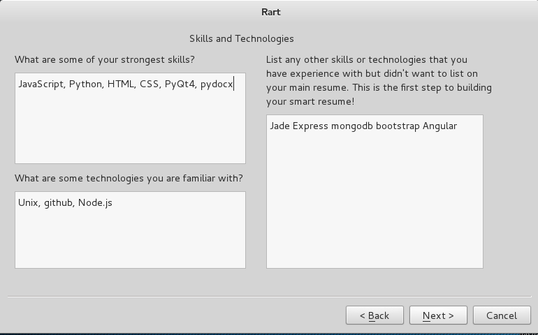

Rart
How to use the Rart App
Read through this guide and start up your rart app!
- Step 1:
- Fill out your name and contact information, include any websites that you may have.
- Step 2:
- List your education info.
- Step 3:
- List any prior and/or current work experience you have. Be sure to list any achievements as well!
- Step 4:
- List any projects that you have completed or are working on. Include any skills you learned and/or used while doing these projects.
- Step 5
- List your strongest skills and technology that you are familiar with. Also include skills that may not be your strongest skills, this will help build your smart resume!
- Step 6:
- List any achievements and references.
- Step 7:
- Write your objective, this is essentially a summary of your resume.
- Step 8:
- You can either click "Make Resume", which will export your new resume into a .docx file, or click "Next", where you have the option of making your resume a smart resume
- Step 9:
- If there are any jobs that are of interest to you, copy and paste their job description into the box and the smart resume will filter relevant key words from the description and match it to your resume. This will beef up your resume to appeal to this job application!
- Finally
- This is what your smart resume, or rart, should look like.


